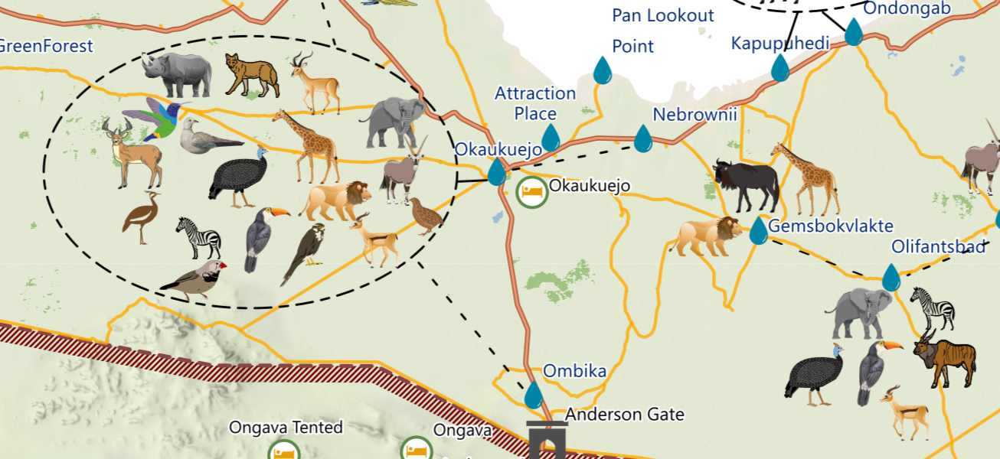
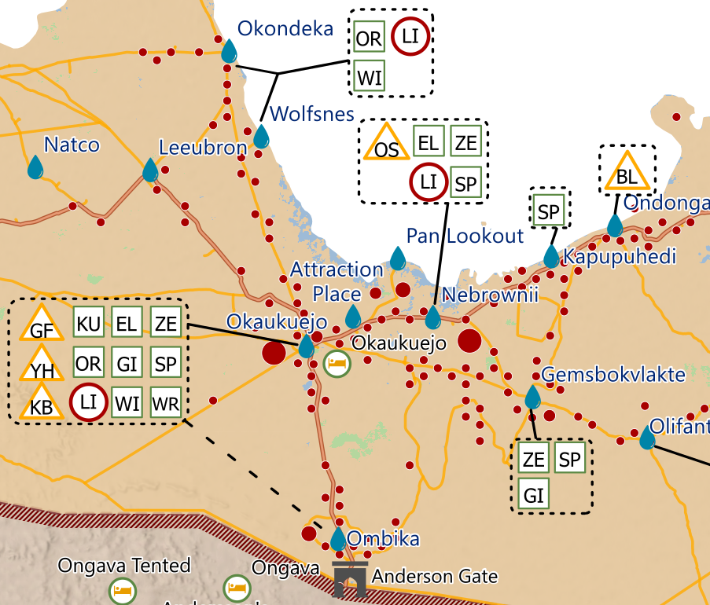
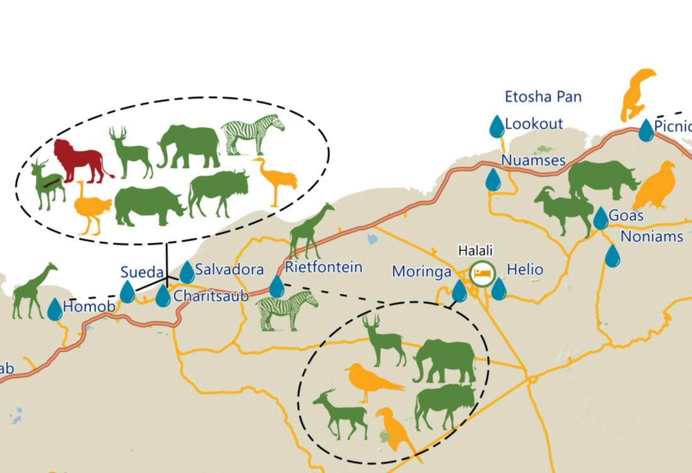

<!DOCTYPE html>
<html lang='cs'>

<head>
  <title>Etosha National Park</title>

  <!-- ADDRESS BAR COLOR -->
  <meta name="theme-color" content="#FFFF00">
  <meta name="apple-mobile-web-app-status-bar-style" content="#FFFF00">

  <!-- NO CACHE -->
  <meta http-equiv="Cache-Control" content="no-cache, no-store, must-revalidate">
  <meta http-equiv="Pragma" content="no-cache">
  <meta http-equiv="Expires" content="0">

  <meta charset='utf-8'>
  <link href='img/Wildlifeicon.png' rel='shortcut icon' type='image/png'>
  <meta name="viewport" content="width=device-width, initial-scale=1"> <!-- DULEZITE PRO RESPONZIVITU -->

  <!-- GOOGLE FONTS -->
  <link href="https://fonts.googleapis.com/css?family=PT+Serif:400,400i,700,700i&display=swap&subset=latin-ext"
    rel="stylesheet">

  <!-- CSS + FONTAWESOME -->
  <link rel="stylesheet" href="css/style-map.css?v=004" type="text/css">
  <!-- <link rel="stylesheet" type="text/css" href="css/css.css?Tuesday 15th of August 2023 02:57:02 PM" /> -->
  <link rel="stylesheet" href="css/all.css" type="text/css">

  <!-- LEAFLET -->
  <link rel="stylesheet" href="css/leaflet.css" />
  <script src="js/leaflet.js"></script>

  <link rel="stylesheet" href="https://unpkg.com/leaflet.markercluster@1.4.1/dist/MarkerCluster.css" />
  <link rel="stylesheet" href="https://unpkg.com/leaflet.markercluster@1.4.1/dist/MarkerCluster.Default.css" />
  <script src="https://unpkg.com/leaflet.markercluster@1.4.1/dist/leaflet.markercluster-src.js"></script>

  <link rel="stylesheet" href="css/Leaflet.DonutCluster.css" />
  <script src="js/Leaflet.DonutCluster.js"></script>


  <!-- OTHER -->
  <script src="js/jquery.min.js"></script>
  <script src="js/leaflet.ajax.js"></script>
  <script src="js/L.Control.Locate.min.js"></script>

  <link rel="stylesheet" href="css/modal.css" />
  <link rel="stylesheet" href="css/style.css" />


  <!-- Fix Viewport Height on Phone -->
  <script type="text/javascript">
    $(document).ready(function () {
      let vh = window.innerHeight * 0.01;
      document.documentElement.style.setProperty('--vh', `${vh}px`);
      sirka(window.innerWidth);
    });
    $(window).resize(function () {
      let vh = window.innerHeight * 0.01;
      document.documentElement.style.setProperty('--vh', `${vh}px`);
      sirka(window.innerWidth);
    });
  </script>

  <!-- End Fix Viewport Height on Phone -->


</head>

<body id="vmomapa">

  <div id="soupatko-tel"><i class="fas fa-chevron-left" id="soupatko-tel-i"></i></div>

  <!-- Start MAP -->
  <div id="map">
    <div id="overlay" style="opacity: 0;"></div>
    <div id="soupatko"><i class="fas fa-chevron-right"></i></div>
    <div id="centerer-btn"><i class="far fa-map"></i></div> <!-- <i class="fas fa-expand-arrows-alt"></i> -->
  </div>
  <!-- End MAP -->

  <!-- Basemap Switch Start -->
  <div id="controls" class="topLayer">
    <div id="switch" class="control rounded-small secondary shadow-small topLayer" value="1" title="Switch BaseMap">
    </div>
  </div>
  <!-- Basemap Switch - End -->

  <!-- SIDEBAR -->
  <div id="sidebar">
    <a href="./index.html" class="home-button"></a>
    <div class="header"></div>
    <div class="content"></div>
  </div>

  <!-- SIDEBAR -->

  <script>

    var minZoom = 8;
    var maxZoom = 16;
    var home_x = -18.7839158;
    var home_y = 15.6931338;
    var home_z = 8;

    var map = L.map('map', {
      zoomControl: false,
      minZoom: minZoom,
      maxZoom: maxZoom,
      //maxBounds: bounds,
      //maxBoundsViscosity: 1
    }).setView([home_x, home_y], home_z);


    /*** Base Map Layer***/
    // Attribution
    var mbUrl = "https://api.tiles.mapbox.com/v4/{id}/{z}/{x}/{y}.png?access_token=pk.eyJ1IjoibWFwYm94IiwiYSI6ImNpejY4NXVycTA2emYycXBndHRqcmZ3N3gifQ.rJcFIG214AriISLbB6B5aw";
    var tirazMapboxLight = '&copy <a href="https://www.mapbox.com/about/maps/">Mapbox</a> &copy <a href="https://www.openstreetmap.org/copyright">OpenStreetMap</a> | <a href="https://www.mapbox.com/map-feedback/" target="_blank">Improve this map</a>';
    var tirazCartoLight = '&copy; <a href="https://www.openstreetmap.org/copyright">OpenStreetMap</a> contributors &copy; <a href="https://carto.com/attributions">CARTO</a>';

    var baseMapboxLight = L.tileLayer(mbUrl, {
      id: "mapbox.light",
      attribution: tirazMapboxLight
    });

    var baseCartoLight = L.tileLayer('https://server.arcgisonline.com/ArcGIS/rest/services/World_Street_Map/MapServer/tile/{z}/{y}/{x}', {
      attribution: 'Tiles &copy; Esri &mdash; Source: Esri, DeLorme, NAVTEQ, USGS, Intermap, iPC, NRCAN, Esri Japan, METI, Esri China (Hong Kong), Esri (Thailand), TomTom, 2012'
    });

    var baseSatellite = L.tileLayer('https://server.arcgisonline.com/ArcGIS/rest/services/World_Imagery/MapServer/tile/{z}/{y}/{x}', {
      attribution: 'Tiles &copy; Esri &mdash; Source: Esri, i-cubed, USDA, USGS, AEX, GeoEye, Getmapping, Aerogrid, IGN, IGP, UPR-EGP, and the GIS User Community'
    });

    var baseMapy = L.tileLayer('https://{s}.basemaps.cartocdn.com/light_all/{z}/{x}/{y}{r}.png', {
      attribution: tirazCartoLight,
      subdomains: 'abcd',
    });

    /*** Base Map Layer End ***/


    /* Basemap Changing Functionality */
    let mapSwitch = L.map('switch', {
      zoomControl: false,
      attributionControl: false,
      minZoom: minZoom - 3,
      maxZoom: maxZoom - 3,
    }).setView([49.595, 17.256], minZoom - 3);

    mapSwitch.dragging.disable();
    mapSwitch.touchZoom.disable();
    mapSwitch.doubleClickZoom.disable();
    mapSwitch.scrollWheelZoom.disable();

    baseSatellite.addTo(mapSwitch);


    $('#switch').on('click', function () {
      let switchValue = $("#switch").attr("value");
      switch (switchValue) {
        case "1":
          map.removeLayer(baseCartoLight);
          mapSwitch.removeLayer(baseSatellite);
          map.addLayer(baseSatellite);
          baseSatellite.bringToBack();
          mapSwitch.addLayer(baseMapy);
          $('#switch').attr('value', '2');
          break;
        case "2":
          map.removeLayer(baseSatellite);
          mapSwitch.removeLayer(baseMapy);
          map.addLayer(baseMapy);
          baseMapy.bringToBack();
          mapSwitch.addLayer(baseCartoLight);
          $('#switch').attr('value', '0');
          break;
        case "0":
          map.removeLayer(baseMapy);
          mapSwitch.removeLayer(baseCartoLight);
          map.addLayer(baseCartoLight);
          baseCartoLight.bringToBack();
          mapSwitch.addLayer(baseSatellite);
          $('#switch').attr('value', '1');
          break;
      }

    });
    /* Basemap Changing Functionality */


    /*** User Group Maps Tiles ***/

    /*** Young Group ***/
    var young = [12.6019168864157791, -21.7862245783228836, 18.3621721990143421, -17.5663009794080196];
    var youngoptions = {
      minZoom: 3,
      maxZoom: 18,
      opacity: 1.0,
      attribution: 'Rendered with <a href="https://www.maptiler.com/desktop/">MapTiler Desktop</a>',
      tms: false
    };
    var youngbounds = new L.LatLngBounds(
      new L.LatLng(young[1], young[0]),
      new L.LatLng(young[3], young[2]));

    var youngtiles = L.tileLayer('', youngoptions);

    function updateOpacity_19452(value) {
      youngtiles.setOpacity(value);
    }


    /*** Expert Group ***/
    var expert = [12.6019168864157791, -21.7862245783228836, 18.3621721990143421, -17.5663009794080196];
    var expertoptions = {
      minZoom: 3,
      maxZoom: 18,
      opacity: 1.0,
      attribution: 'Rendered with <a href="https://www.maptiler.com/desktop/">MapTiler Desktop</a>',
      tms: false
    };
    var expertbounds = new L.LatLngBounds(
      new L.LatLng(expert[1], expert[0]),
      new L.LatLng(expert[3], expert[2]));

    var experttiles = L.tileLayer('', expertoptions);

    function updateOpacity_19683(value) {
      experttiles.setOpacity(value);
    }

    /*** Public Group ***/
    var publics = [12.6019168864157791, -21.7862245783228836, 18.3621721990143421, -17.5663009794080196];
    var publicoptions = {
      minZoom: 3,
      maxZoom: 18,
      opacity: 1.0,
      attribution: 'Rendered with <a href="https://www.maptiler.com/desktop/">MapTiler Desktop</a>',
      tms: false
    };
    var publicbounds = new L.LatLngBounds(
      new L.LatLng(publics[1], publics[0]),
      new L.LatLng(publics[3], publics[2]));

    var publictiles = L.tileLayer('', publicoptions);

    function updateOpacity_601810(value) {
      publictiles.setOpacity(value);
    }

    /*** Target Group Maps Tiles End ***/

    // everything buttons

    var zoom = L.control.zoom({
      position: 'topleft'
      /*position: 'topright'*/
    });

    var scale = L.control.scale({
      position: 'bottomright',
      imperial: false
    });

    baseCartoLight.addTo(map);
    baseMapy.addTo(mapSwitch);

    zoom.addTo(map);
    scale.addTo(map);

    /*** Side Bar Functionality ***/

    function viceInfo() {
      $('#soupatko-tel').trigger("click");
    };

    jQuery("#soupatko").on('click', function () {
      if ((jQuery("#map").width() / jQuery("body").width()) < 1) {
        jQuery("#map").animate({
          "width": "100vw"
        }, 250);
        jQuery("#sidebar").hide();
        jQuery('#soupatko i').animate({
          deg: -180
        }, {
          duration: 250,
          step: function (now) {
            $(this).css({
              transform: 'rotate(' + now + 'deg)'
            });
          }
        });
      } else {
        jQuery("#sidebar").show();
        jQuery("#map").animate({
          "width": "75vw"
        }, 250);
        jQuery('#soupatko i').animate({
          deg: 0
        }, {
          duration: 250,
          step: function (now) {
            $(this).css({
              transform: 'rotate(' + now + 'deg)'
            });
          }
        });
      }
      setTimeout(function () {
        map.invalidateSize({
          animate: true
        })
      }, 250);
    });

    /*** Zoome to Home Function ***/
    jQuery("#centerer-btn").on('click', function () {
      map.flyTo([home_x, home_y], home_z);
    });

    /*** Side Bar something Function code ***/
    jQuery("#soupatko-tel").on('click', function () {
      if ((jQuery("#map").width() / jQuery("body").width()) < 1) {
        jQuery("#map").animate({
          "width": "100vw"
        }, 250);
        jQuery("#sidebar").hide();
        jQuery('#soupatko-tel-i').animate({
          deg: 0
        }, {
          duration: 250,
          step: function (now) {
            $(this).css({
              transform: 'rotate(' + now + 'deg)'
            });
          }
        });
        jQuery("#switch").animate({
          left: "8px"
        }, 250);
        jQuery("#legenda-btn").animate({
          left: "74px"
        }, 250);
        jQuery("#locator-btn").animate({
          left: "140px"
        }, 250);
        jQuery("#centerer-btn").animate({
          left: "8px"
        }, 250).removeAttr('style'); // upravy 2022: 206px => 8px
      } else {
        jQuery("#sidebar").show();
        jQuery("#map").animate({
          "width": "0vw"
        }, 250);
        jQuery('#soupatko-tel-i').animate({
          deg: -180
        }, {
          duration: 250,
          step: function (now) {
            $(this).css({
              transform: 'rotate(' + now + 'deg)'
            });
          }
        });
        jQuery("#switch").animate({
          left: "-200px"
        }, 250);
        jQuery("#legenda-btn").animate({
          left: "-200px"
        }, 250);
        jQuery("#locator-btn").animate({
          left: "-200px"
        }, 250);
        jQuery("#centerer-btn").animate({
          left: "-200px"
        }, 250);
      }
      setTimeout(function () {
        map.invalidateSize({
          animate: true
        })
      }, 250);
    });


    /*** Base Map Moving Function code ***/

    map.on('moveend', function (e) {
      center = map.getCenter();
      zoom = map.getZoom();
      mapSwitch.setView(center, zoom - 3);
    });
    /*** Base Map Moving Function code ***/

    /*** Heading and Introduction Left side Panel ***/

    var header_default = '<h1>Etosha National Park<br/>Cartographic Designed Maps<br/></h1><h3></h3> <p style="text-align:center;font-size:80%; line-height:120%; padding:0 10px;">Etosha National Park covers an area of 22,937 km², is the most popular tourist destination in Namibia, and is considered one of the largest wildlife sanctuaries in the world </p>';

    /*** List of Layers on Left Panel Functionality ***/

    var poltava = L.marker([49.58943580387158, 34.551020478000666]);

    /*Young Group*/
    var sb_default = '<a href="#" onclick="poltava.remove();youngtiles.remove();experttiles.remove();publictiles.remove();youngtiles.addTo(map);"><div class="item-envelope promitaci" id="AS19452"><div class="item"><span class="item-info"><span class="title">YOUNG GROUP MAP</span><span class="attributes">Etosha National Park</span></span></div><hr></div></a>';
    /*Expert Group*/
    sb_default += '<a href="#" onclick="poltava.remove();youngtiles.remove();experttiles.remove();publictiles.remove();experttiles.addTo(map);"><div class="item-envelope promitaci" id="AS19683"><div class="item"><span class="item-info"><span class="title">EXPERT GROUP MAP</span><span class="attributes">Etosha National Park</span></span></div><hr></div></a>';
    /*Public Group*/
    sb_default += '<a href="#" onclick="poltava.remove();youngtiles.remove();experttiles.remove();publictiles.remove();publictiles.addTo(map);"><div class="item-envelope promitaci" id="AS601810"><div class="item"><span class="item-info"><span class="title">GENERAL PUBLIC GROUP MAP</span><span class="attributes">Etosha National Park</span></span></div><hr></div></a>';


    /*Young Gourp Map Details*/
    var img_AS19452 = '';
    var AS19452 = '<button onclick="document.getElementById(\'id01\').style.display=\'block\'" class="w3-btn">View the Map</button><div id="id01" class="w3-modal"><div class="w3-modal-content"><div class="w3-container"><span onclick="document.getElementById(\'id01\').style.display=\'none\'" class="w3-closebtn">&times;</span><iframe src="img/Young_Group.pdf" ,loading="lazy"></iframe></div></div></div>';
    AS19452 += '<div class="place-envelope"><h4>Etosha National Park covers an area of 22,937 km², is the most popular tourist destination in Namibia, and is considered one of the largest wildlife sanctuaries in the world. It contains 114 mammal species, 340 bird species, 110 reptiles, and 16 amphibians. The best time to visit the park is during the dry season, when animals are concentrated at waterholes that provide an amazing wildlife sighting experience. This map provides information about the different wildlife species that can potentially be seen at different water holes in the park</h4> <span class="attributes">';
    AS19452 += '<p>Etosha National Park covers an area of 22,937 km², is the most popular tourist destination in Namibia, and is considered one of the largest wildlife sanctuaries in the world. It contains 114 mammal species, 340 bird species, 110 reptiles, and 16 amphibians. The best time to visit the park is during the dry season, when animals are concentrated at waterholes that provide an amazing wildlife sighting experience. This map provides information about the different wildlife species that can potentially be seen at different water holes in the park</p>';

    /*Expert Gourp Map Details*/
    var img_AS19683 = '';
    var AS19683 = '<button onclick="document.getElementById(\'id01\').style.display=\'block\'" class="w3-btn">View the map</button><div id="id01" class="w3-modal"><div class="w3-modal-content"><div class="w3-container"><span onclick="document.getElementById(\'id01\').style.display=\'none\'" class="w3-closebtn">&times;</span><iframe src="img/Expert_Group.pdf", loading="lazy"></iframe></div></div></div>';
    AS19683 += '<div class="place-envelope"><h4>Etosha National Park covers an area of 22,937 km², is the most popular tourist destination in Namibia, and is considered one of the largest wildlife sanctuaries in the world. It contains 114 mammal species, 340 bird species, 110 reptiles, and 16 amphibians. The best time to visit the park is during the dry season, when animals are concentrated at waterholes that provide an amazing wildlife sighting experience. This map provides information about the different wildlife species that can potentially be seen at different water holes in the park</h4> <span class="attributes">';
    AS19683 += '<p>Etosha National Park covers an area of 22,937 km², is the most popular tourist destination in Namibia, and is considered one of the largest wildlife sanctuaries in the world. It contains 114 mammal species, 340 bird species, 110 reptiles, and 16 amphibians. The best time to visit the park is during the dry season, when animals are concentrated at waterholes that provide an amazing wildlife sighting experience. This map provides information about the different wildlife species that can potentially be seen at different water holes in the park</p>';

    /*Public Group Map Details*/
    var img_AS601810 = '';
    var AS601810 = '<button onclick="document.getElementById(\'id01\').style.display=\'block\'" class="w3-btn">view the map</button><div id="id01" class="w3-modal"><div class="w3-modal-content"><div class="w3-container"><span onclick="document.getElementById(\'id01\').style.display=\'none\'" class="w3-closebtn">&times;</span><iframe src="img/General_Public.pdf", loading="lazy"></iframe></div></div></div>';
    AS601810 += '<div class="place-envelope"><h4>Etosha National Park covers an area of 22,937 km², is the most popular tourist destination in Namibia, and is considered one of the largest wildlife sanctuaries in the world. It contains 114 mammal species, 340 bird species, 110 reptiles, and 16 amphibians. The best time to visit the park is during the dry season, when animals are concentrated at waterholes that provide an amazing wildlife sighting experience. This map provides information about the different wildlife species that can potentially be seen at different water holes in the park</h4> <span class="attributes">';
    AS601810 += '<p>Etosha National Park covers an area of 22,937 km², is the most popular tourist destination in Namibia, and is considered one of the largest wildlife sanctuaries in the world. It contains 114 mammal species, 340 bird species, 110 reptiles, and 16 amphibians. The best time to visit the park is during the dry season, when animals are concentrated at waterholes that provide an amazing wildlife sighting experience. This map provides information about the different wildlife species that can potentially be seen at different water holes in the park</p>';

    var close = '<a href="#"><div class="close-circle"><i class="fas fa-times"></i></div></a>';
    jQuery('.content').html(sb_default);
    jQuery('.header').html(header_default);

    jQuery('.header').on('click', '#vse', function () {
      jQuery('.item-envelope').show();
      jQuery("li").removeClass("active");
      jQuery("#vse").addClass("active");
      aktivni = "vse";
    });
    jQuery('.header').on('click', '#promitaci', function () {
      jQuery('.item-envelope').hide();
      jQuery('.promitaci').show();
      jQuery("li").removeClass("active");
      jQuery("#promitaci").addClass("active");
      aktivni = "promitaci";
    });
    jQuery('.header').on('click', '#afospot', function () {
      jQuery('.item-envelope').hide();
      jQuery('.afospot').show();
      jQuery("li").removeClass("active");
      jQuery("#afospot").addClass("active");
      aktivni = "afospot";
    });
    jQuery('.header').on('click', '#ostatni', function () {
      jQuery('.item-envelope').hide();
      jQuery('.ostatni').show();
      jQuery("li").removeClass("active");
      jQuery("#ostatni").addClass("active");
      aktivni = "ostatni";
    });


    $('.content').on('click', '.item-envelope', function (event) {
      var target = jQuery(this).attr("id");
      jQuery(".header").html(eval("img_" + target) + close);
      jQuery(".content").html(eval(target));
      jQuery(".content").scrollTop(0);
      target2 = eval("marker_" + target);
      markers.zoomToShowLayer(target2, function () {
        target2.openPopup();
      });

    });


    $('.header').on('click', '.close-circle', function () {
      jQuery('.content').html(sb_default);
      jQuery('.header').html(header_default);
      jQuery("li").removeClass("active");
      jQuery("#" + aktivni).addClass("active");
      if (aktivni != "vse") {
        jQuery('.item-envelope').hide();
        jQuery('.' + aktivni).show();
      }
      markers.unspiderfy();
    });


    function openPlace(placeID) {
      jQuery(".header").html(eval("img_" + placeID) + close);
      jQuery(".content").html(eval(placeID));
    };
  
    /*** Geojson Layers In Map***/
    
    // Create a marker cluster group
    //var markers = L.markerClusterGroup({showCoverageOnHover: false,spiderfyOnMaxZoom: true, zoomToBoundsOnClick: true});

    // Create a Donust Cluster
    var markers = L.DonutCluster(
      //the first parameter is  markercluster's configuration file
      {
        chunkedLoading: true,
        showCoverageOnHover: false
      }
      //the second parameter is  DonutCluster's configuration file
      , {
        key: 'Species', //mandotary, indicates the grouped field, set it in the options of marker
        //sumField: 'value', // optional, indicates the value field to sum. set it in the options of marker
        order: ['Herbivore', 'Predator', 'Bird'], // optional, indicates the group order.
        //Species: ['Herbivore','Predator','Bird'], // optional, indicates the group title, when it is an array, the order option must be specified. or use an object.{A:'Type A',D: 'Type D',B:'Type B',C:'Type C' }
        arcColorDict: { // mandotary, the arc color for each group.      
          Herbivore: '#5d8948ff',
          Predator: '#a80000ff',
          Bird: '#ffaa00ff',
        }
      })

    var wildlife = L.geoJSON.ajax('https://api.maptiler.com/data/7636e22e-f662-43a1-af73-c38837257505/features.json?key=ENGxwc93eUk1G1MBKnFt', {
      // Point toLayer function to create markers for each GeoJSON point feature
      pointToLayer: function (feature, latlng) {
        return L.circleMarker(latlng, {
          Species: feature.properties.Species,
          radius: 4, // Adjust the size of the marker
          fillColor: 'orange', // Fill color of the marker
          color: '#F86F15', // Border color of the marker
          weight: 0.8, // Border width of the marker
          opacity: 1, // Opacity of the marker
          fillOpacity: 0.8 // Opacity of the marker fill
        });
      },
      onEachFeature: function (feature, layer) {
        // Create the popup content
        var popupContent = "<h3 class='custom-popup'> Wildlife:  " + feature.properties.title + "</h3>" + "";
        // Bind the popup to the layer
        layer.bindPopup(popupContent);
        // Add the layer to the marker cluster group
        markers.addLayer(layer);
      }
    });

    // Add the marker cluster group to the map
    map.addLayer(markers);


    /*** Park Boundary***/
    var park = L.geoJSON.ajax('https://gist.githubusercontent.com/bilalpervaiz/1c27020f9b558e07b7745dfe7e4bde7d/raw/a8d11387e6190107a36ec5fc44b3fc548e532313/boundary.geojson', {
      // Point toLayer function to create markers for each GeoJSON point feature
      style: function (feature) {
        return {
          color: '#730000ff', // Outline color of the line
          weight: 2, // Width of the line
          opacity: 1,
          fillColor: 'none' // Opacity of the line
        };
      }
    }).addTo(map);

    /*** Gate Data***/

    //Gate Icon Code

    var gateicon = L.icon({
      iconUrl: "img/gate.png",
      iconSize: [14, 14], // size of the icon
      iconAnchor: [7, 14], // point of the icon which will correspond to marker's location

    });

    var gate = L.geoJSON.ajax('https://api.maptiler.com/data/398e51ed-7b3c-401c-9e32-bd3a336974fa/features.json?key=ENGxwc93eUk1G1MBKnFt', {
      // Point toLayer function to create markers for each GeoJSON point feature
      pointToLayer: function (feature, latlng) {
        return L.marker(latlng, {
          icon: gateicon,
          // radius: 4, // Adjust the size of the marker
          // fillColor: 'black', // Fill color of the marker
          // color: '#FFFFFF', // Border color of the marker
          // weight: 0.8, // Border width of the marker
          // opacity: 1, // Opacity of the marker
          // fillOpacity: 0.8 // Opacity of the marker fill
        });
      },
      onEachFeature: function (feature, layer) {
        // Create the popup content
        var popupContent = "<h3 class='custom-popup'> Name: " + feature.properties.Name + "</h3>";
        // Bind the popup to the layer
        layer.bindPopup(popupContent);
      }
    }).addTo(map);


    /*** lodge Data***/

    // Lodge Icon Data
    var lodgeicon = L.icon({
      iconUrl: "img/lodge.png",
      iconSize: [14, 14], // size of the icon
      iconAnchor: [7, 14], // point of the icon which will correspond to marker's location

    });

    var lodge = L.geoJSON.ajax('https://api.maptiler.com/data/32425296-438d-46cc-9a6e-e9f3f5974659/features.json?key=ENGxwc93eUk1G1MBKnFt', {
      // Point toLayer function to create markers for each GeoJSON point feature
      pointToLayer: function (feature, latlng) {
        return L.marker(latlng, {
          icon: lodgeicon,
          // radius: 4, // Adjust the size of the marker
          // fillColor: 'green', // Fill color of the marker
          // color: '#FFFFFF', // Border color of the marker
          // weight: 0.8, // Border width of the marker
          // opacity: 1, // Opacity of the marker
          // fillOpacity: 0.8 // Opacity of the marker fill
        });
      },
      onEachFeature: function (feature, layer) {
        // Create the popup content
        var popupContent = "<h3 class='custom-popup'> Name: " + feature.properties.Name + "</h3>";
        // Bind the popup to the layer
        layer.bindPopup(popupContent);
      }
    }).addTo(map);

    /*** water Data***/

    //Water Icon Data
    var watericon = L.icon({
      iconUrl: "img/water.png",
      iconSize: [9.5, 15], // size of the icon
      iconAnchor: [4.5, 15], // point of the icon which will correspond to marker's location

    });

    var water = L.geoJSON.ajax('https://api.maptiler.com/data/8adcb9f6-48a6-4456-83a8-48a50950af6a/features.json?key=ENGxwc93eUk1G1MBKnFt', {
      // Point toLayer function to create markers for each GeoJSON point feature
      pointToLayer: function (feature, latlng) {
        return L.marker(latlng, {
          icon: watericon,
          // radius: 4, // Adjust the size of the marker
          // fillColor: 'blue', // Fill color of the marker
          // color: '#FFFFFF', // Border color of the marker
          // weight: 0.8, // Border width of the marker
          // opacity: 1, // Opacity of the marker
          // fillOpacity: 0.8 // Opacity of the marker fill
        });
      },
      onEachFeature: function (feature, layer) {
        // Create the popup content
        var popupContent = "<h3 class='custom-popup'> Name: " + feature.properties.Name + " Waterhole </h3>";
        // Bind the popup to the layer
        layer.bindPopup(popupContent);
      }

    }).addTo(map);

    /*** Road Data***/

    var road = L.geoJSON.ajax('https://api.maptiler.com/data/d5485bca-2ef2-4e3f-a898-7a59ac95263c/features.json?key=ENGxwc93eUk1G1MBKnFt', {
      // Point toLayer function to create markers for each GeoJSON point feature
      style: function (feature, layer) {
        return {
          color: '#e69973ff', // Outline color of the line
          weight: 1.5, // Width of the line
          opacity: 0.8,
          fillColor: 'none' // Opacity of the line
        };
      },
      onEachFeature: function (feature, layer) {
        // Create the popup content
        var popupContent = "<h3 class='custom-popup'> Name: " + feature.properties.fclass + " Road </h3>";
        // Bind the popup to the layer
        layer.bindPopup(popupContent);
      }

    }).addTo(map);

    /*** Legend***/

    var baseMaps = {
      // "baseMapboxLight": baseMapboxLight,
      // "baseCartoLight": baseCartoLight
    };

    var overlayMaps = {
      "    Water": water,
      "     Lodges and Resort": lodge,
      "     Gate": gate,
      "      Road": road,
      "      Park Boundary": park,

    };

    var layerControl = L.control.layers(baseMaps, overlayMaps, { collapsed: false, position: 'topleft' }).addTo(map);


  </script>


</body>

</html>